Become a Global Citizen
一步一腳印 LCOY → COY → COP
透過 LCOY Taiwan 的平台，台灣青年、大學生，乃至所有 K–12 學生，都將有機會走向全球舞台。
UNFCCC YOUNGO 成員、LCOY Taiwan 國際大使、UCLA 碩士。
透過人師教育協會 My Culture Connect，為台灣大學生開啟聯合國氣候峰會、SDGs 教學、跨國 PBL 的真實國際舞台。
作為 Youth Network（青年網）的創辦人，Edward 成功取得 2026 年聯合國 LCOY Taiwan 的主辦權。該計畫預計於暑假期間，在台灣各地大學、永續中心、USR 計畫聯絡展等舉辦。

長期投入青年氣候行動、SDGs 教育與跨國項目制學習，將個人興趣連結到聯合國永續發展目標，提升台灣在全球氣候行動中的能見度與影響力。
Edward Huang is based in Irvine, CA, holding a Master's degree from UCLA. He is a member of YOUNGO, the official Children and Youth Constituency of the UNFCCC, and has been actively engaged in youth climate action and advocacy since 2023, participating in the Global Conference of Youth (GCOY) and related initiatives.
As an International Ambassador for LCOY Taiwan, and as a youth coach, he guides students in connecting their personal interests with the UN Sustainable Development Goals (SDGs), amplifying the voices of youth and children to raise Taiwan's visibility and impact in global climate action.
Edward Huang（黃雋翔），現居美國加州爾灣，UCLA 碩士畢業。現為聯合國氣候變化綱要公約（UNFCCC）旗下青年組織 YOUNGO 成員，長期投入青年氣候行動與倡議工作。
作為 LCOY Taiwan 國際大使與青年教練，引導學生將個人興趣與聯合國永續發展目標 SDGs 結合，透過青年與兒童的聲音，提升台灣在全球氣候行動中的能見度與影響力。
Edward 工作中常出現的聯合國體系縮寫——一次看懂英文全名與中文意思。

不是一場單向的演講活動——這是 2026 年台灣首度以聯合國認可主辦方身份，匯聚跨世代、多元族群聲音的青年氣候平台。
LCOY Taiwan 並非一場單向的演講活動，而是一個以青年為核心的論壇。在這個平台上，青年被賦予行動力與影響力。在深入理解聯合國體系後，將自身的聲音傳遞至國際舞台。這不僅是一份榮耀，更是一個培養全球公民素養、開啟跨國合作機會的重要起點。
政府的氣候承諾應該要公開、清楚呈現，不能只是停留在文件或口號。減碳目標、政策進度等，都要讓全民看得到，也要讓大家可以一起監督、檢視，確保政策是真的有在落實。
Government climate promises should be made public and clearly presented, not just staying on paper or as slogans. Carbon reduction targets and policy progress should be visible to the public, and everyone can jointly monitor and review whether these policies are truly being implemented.
台灣企業在永續相關領域需更多重視。在擴大相關工作機會的同時，也要釐清目前的狀況到底是「人才不足」還是「職缺不足」。在訓練未來人才的同時，讓培育方向能更貼近實際市場需求。
Taiwan youth green job opportunities that focus on sustainability and ESG-related fields should gain more attention. Identify whether the current demand in the market is "lack of talent" or a "lack of job openings." Academia and industry should ensure talent development aligns with real market needs.
讓 ESG 企業開始擁有對國際氣候會議（如 COY、COP）的基本理解。LCOY Taiwan 讓台灣青年能夠接軌全球氣候，一起共同探討台灣在國際和聯合國如何發聲。
Helping corporate sustainability (ESG) stakeholders establish a foundational understanding of international climate conferences such as COY and COP. LCOY Taiwan enables Taiwanese young people to connect with the international scope and helps Taiwan engage in global climate governance negotiations and action frameworks.
🌠 也歡迎各校提出各項方案
2026 年，全球僅有 113 個國家獲得聯合國氣候變化綱要公約（UNFCCC）認可，成為 LCOY 的主辦單位之一。
LCOY Taiwan 由 Youth Network（青年網）取得唯一主辦權，並與 PAC（People Achievement Consulting）簽署獨家合作；PAC 持有 GRI（全球報告倡議組織）認可，強化本計畫在永續報告與 ESG 標準上的專業性與公信力。LCOY Taiwan is hosted by Youth Network under UNFCCC YOUNGO recognition, in exclusive partnership with PAC — a GRI-recognized partner.
作為 LCOY Taiwan 的唯一主辦方，我們將代表台灣，匯聚不同世代與多元族群的聲音，包含兒童、青年、長者、在地行動團體、原住民族及其他關鍵群體等。讓世界看到臺灣對於氣候變遷以及其他全球議題的表現。
LCOY Taiwan 並非一場單向的演講活動，而是一個以青年為核心的論壇。在這個平台上，青年被賦予行動力與影響力（Empowerment）。在深入理解聯合國體系後，將自身的聲音傳遞至國際舞台。
這不僅是一份榮耀，更是一個培養全球公民素養、開啟跨國合作機會的重要起點。
走向 COP 的旅程，從台灣本地啟動。2026 LCOY Taiwan 已於國立臺中科技大學「以永續思維 啟動技職新未來論壇」正式啟動，由臺灣科大、臺北科大、高雄科大、臺中科大共同參與，人師教育協會林吉祥老師到場見證。論壇圓滿結束後，Edward 與 Youth Network 也開始規劃下一步：由青年與各校系所（或通識）老師合作，在不同學校舉辦在地工作坊，帶青年一起撰寫地區青年氣候宣言，提交台灣政府與聯合國 UNFCCC。
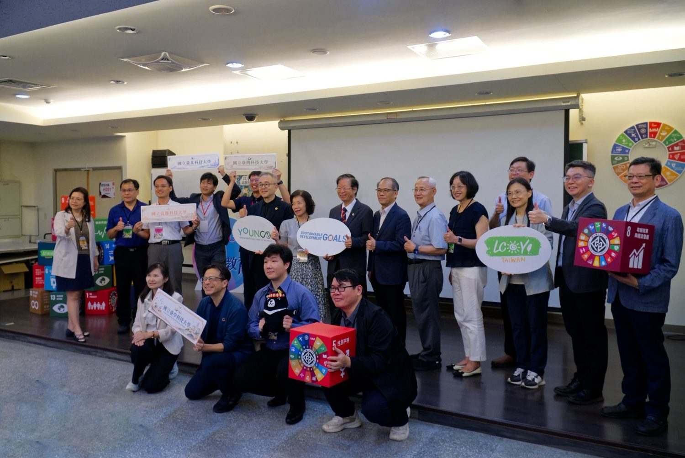
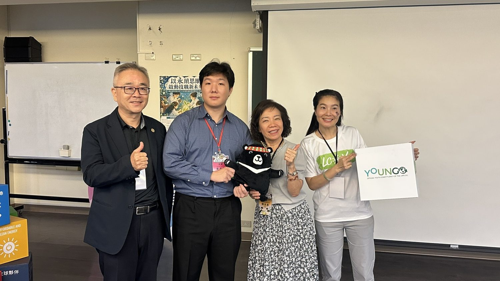
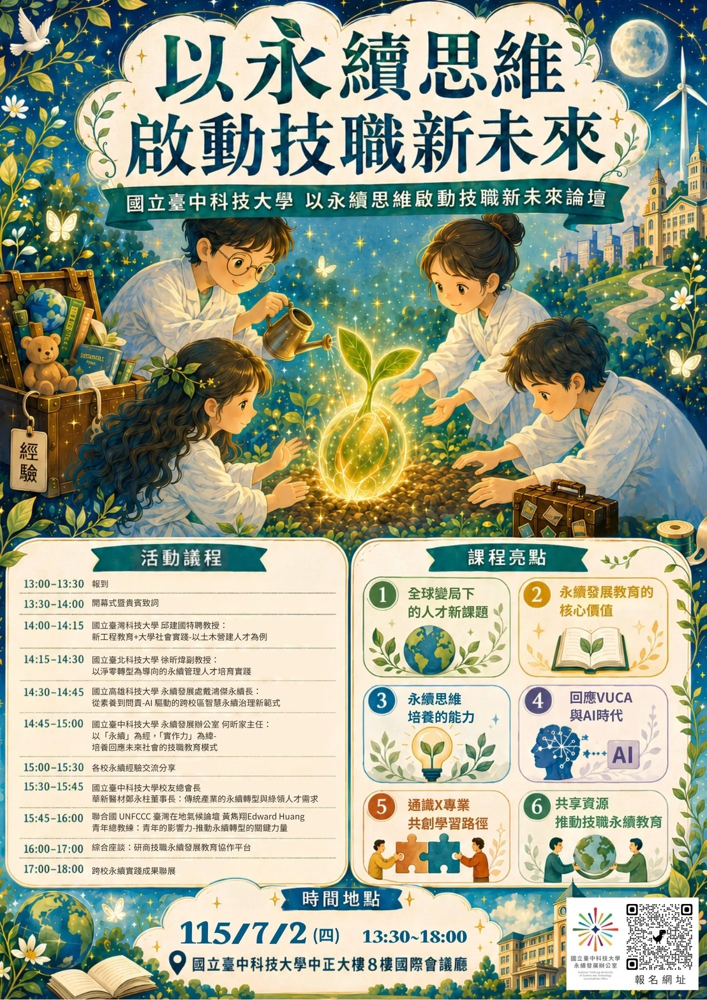
從聯合國體系到我國總統府——LCOY Taiwan 的主辦資格與籌辦過程，都有可查證的正式背書。
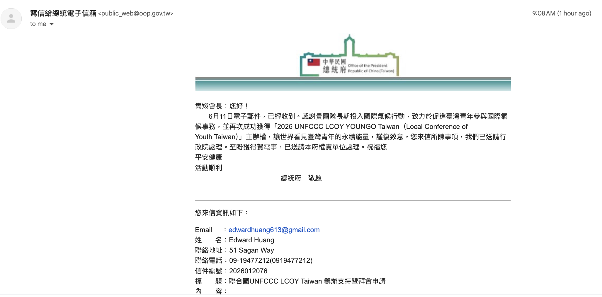
現年 24 歲，擁有 6 年青年教育與教練經驗的 Edward，已累積帶領 K–12 學生與大學生進行專題式學習（Project-Based Learning）的實務經歷。在引導學生探索世界的過程中，找到屬於自己獨一無二的成長歷程。
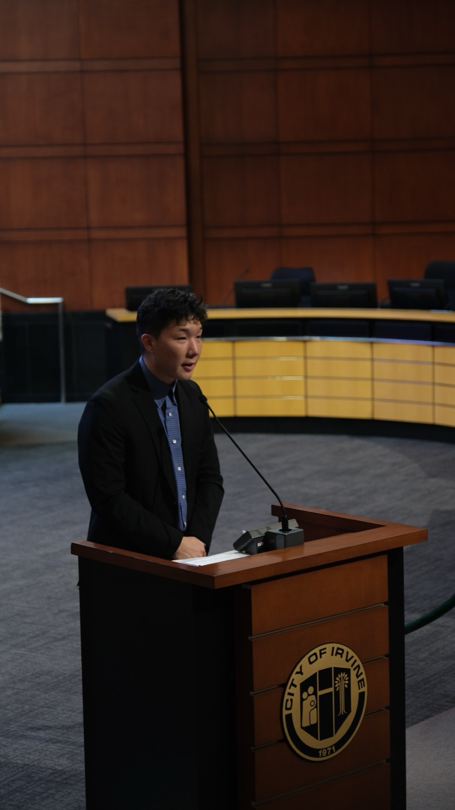
Amplify Young Voices
除了打造如聯合國 LCOY Taiwan 的氣候論壇外，Edward 早於 2023 年前已經開始行動。每年都會在加州爾灣帶領 UC 系統大學生和高中生共同為氣候發聲。

Direct path to UN climate summits
從 2023 年杜拜、2024 年亞塞拜然，到 2025 年巴西，我們持續拓展國際參與的足跡，並期望在 2026 年前往土耳其，為台灣發聲。
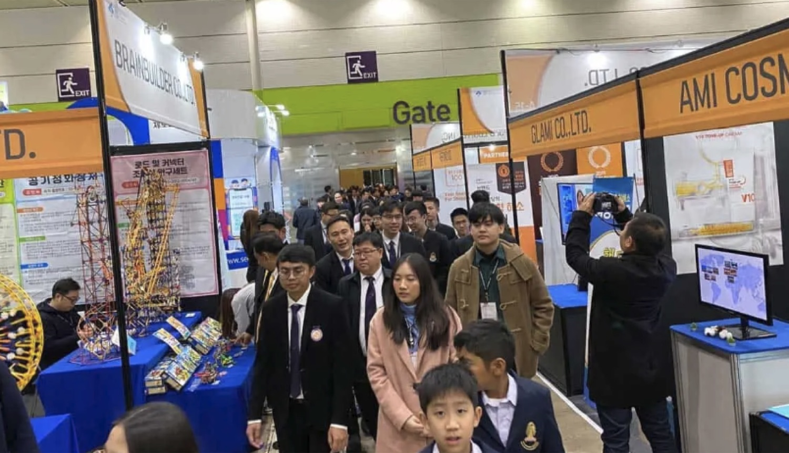
International Invention Fair
Edward 曾帶領青年參與發明展，促進跨領域學習與實作能力的整合，同時引導學生認識專利申請流程與智慧財產權保護的基本概念。
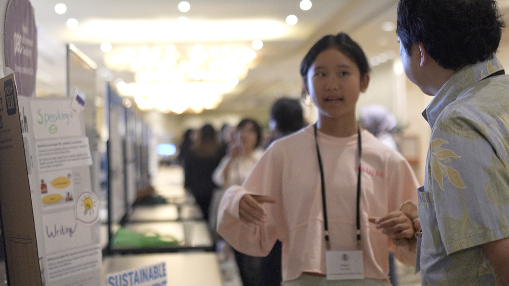
Academic Paper Conference
Edward 帶領青年參與論文發表。不僅協助學生在研究與表達能力上持續成長，同時培養學術思辨與批判性思維。
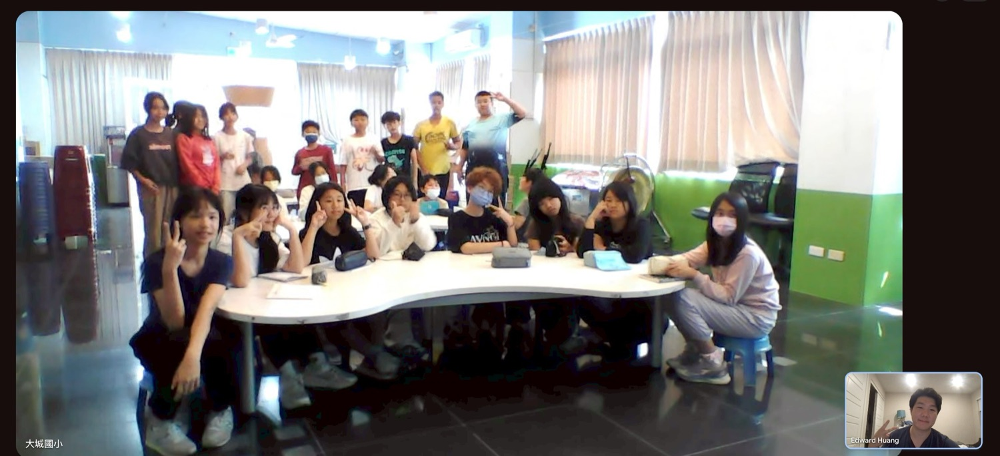
Online English Tutoring
在倡導新一代競爭力的同時，Edward 也關注到全球教育資源的不均。世界並非每個地區都具備基本的學習資源與基礎建設。偏鄉線上英語教學協助資源較不足的地區學習基礎美式英語，縮小教育落差。
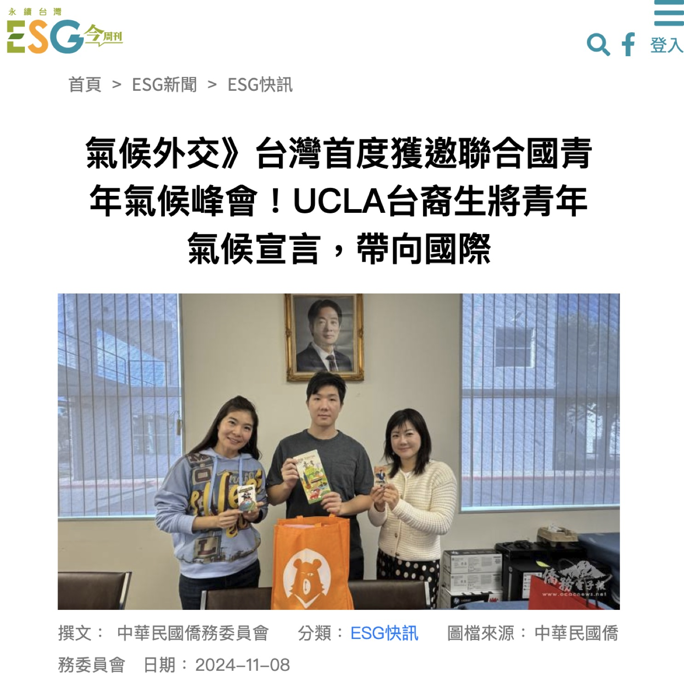
Press coverage & CV boost
Edward 累積主流媒體報導（大紀元、僑務電子報、ESG 永續台灣等）。學生與 Edward 合作的成果，自然有機會出現在新聞稿——對升學、求職、申請獎學金加分極大。
從爾灣到杜拜、從巴庫到貝倫、從台灣偏鄉到聯合國論壇——Edward 帶領青年走過的真實國際舞台。
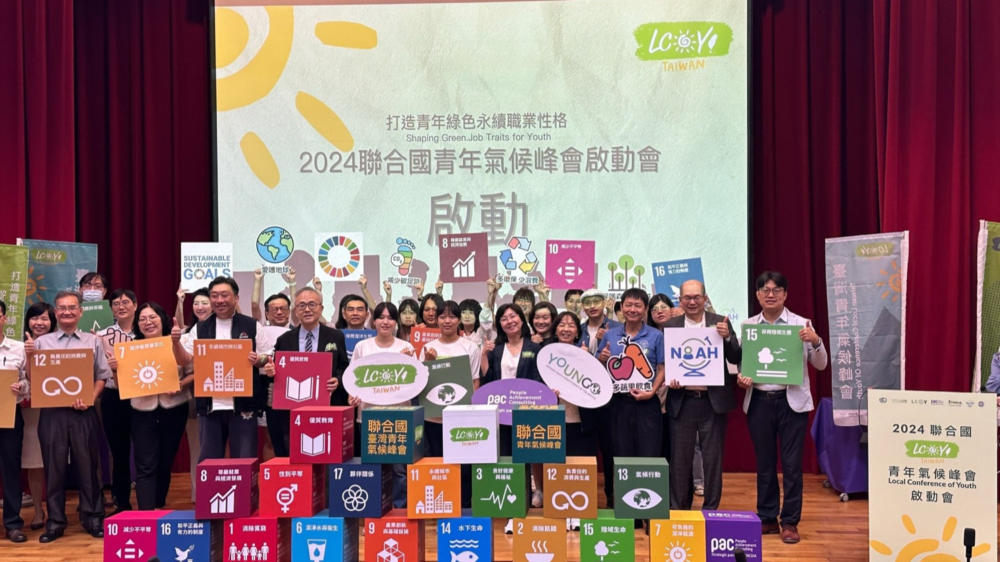


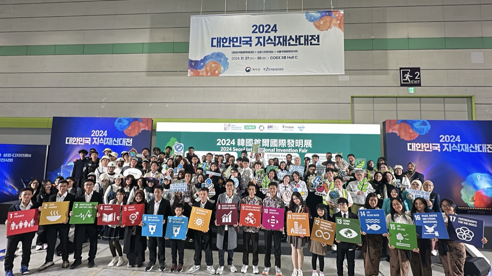
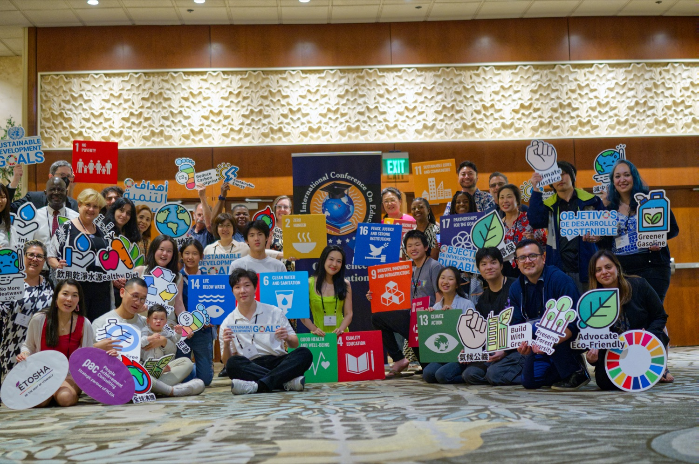
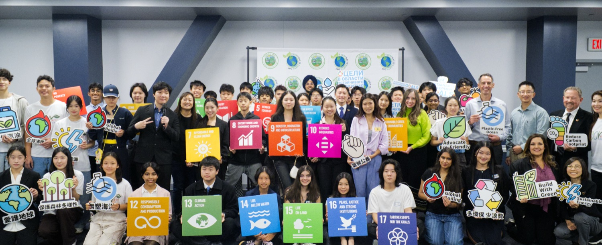
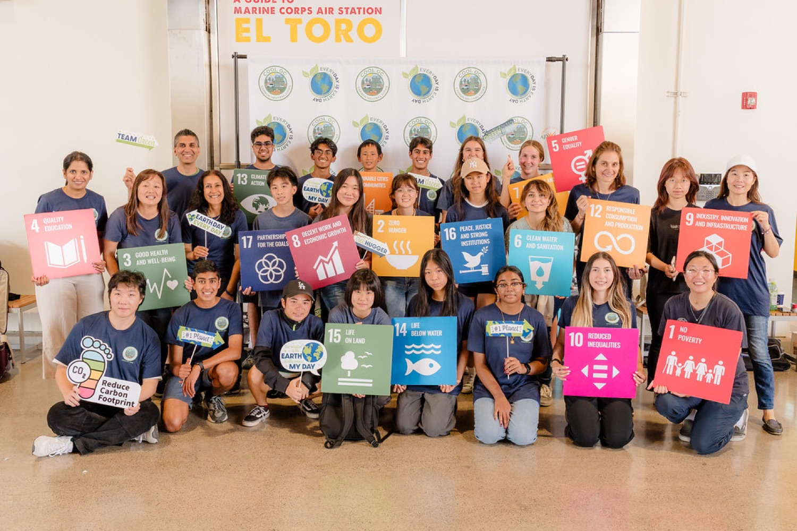
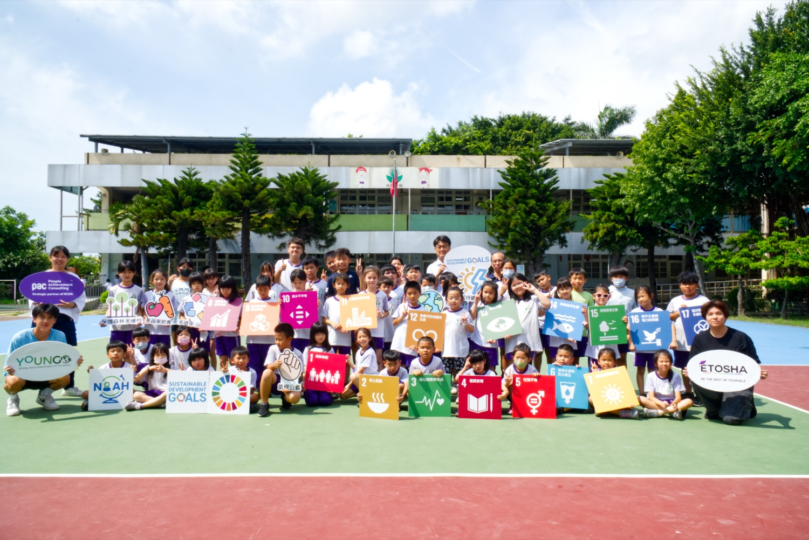
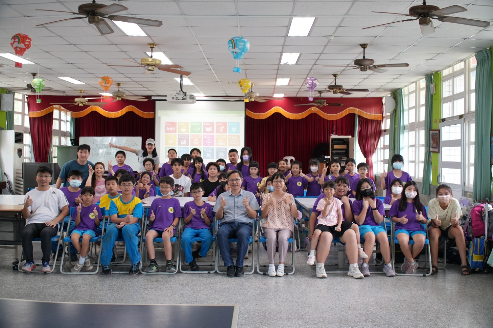
聯合國青年氣候峰會、台美青年文化交流、彰化雙語教育——Edward 的工作受到國內外媒體持續關注。
以下單位最能將 Edward 的國際資源轉化為實際的學生培育成果。
建立海外姊妹會、台美青年交流、學生赴美實習與升學的人脈起點。
結合 UN SDGs 框架推動學生專案，產出可上 UN 平台的成果。
將學生 USR 專案延伸至聯合國 LCOY、COY、GCOY 國際舞台。
為學生領袖開啟跨國青年領導力訓練、媒體曝光、履歷加值。
跨領域 PBL 機會，特別適合畢業專題、論文發表、發明展指導。
對外國際合作、媒體曝光、補助申請的策略性對話。
企業在 ESG / CSR 報告中往往不只需要「掛名贊助」，而是缺乏真正被看見、被理解、被放大的實質影響力。LCOY Taiwan 提供三種合作深度，依貴公司的 ESG 目標選擇。
若貴校有意洽談學生國際氣候參與、SDGs 主題課程、跨國 PBL 合作，請透過人師教育協會 林吉祥老師安排線下會議。